THE FAMILY MODEL T
We all enjoy our Model T hobby, but at one time these now delicate Tin Lizzies were once the main mode of transportation for families during the first half of the 1900's when cars were a fairly new transportation concept. We call them "vintage," but to our ancestors, they were once modern marvels of the road. We consider driving our Model Ts to be a leisurely activity, but to our families of the past, these cars were to them what our modern cars are to us.
It is a great way to see how the Model Ts fit into our history on a personal level. Wouldn't it be great to know if any of the cars in the photos survived, and if so, where they are?
| 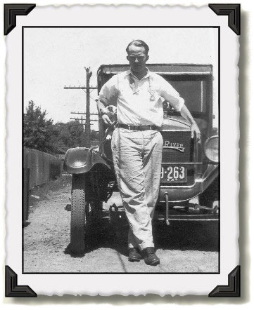 |
Ben Hardeman's Uncle "Skeet" Bennett, his mother's brother, stands in front of his Model T. The year on the license plate is 1927. His mother's family lived in Flat River, Missouri, and you can see the "hometown" radiator casting attached to the radiator.
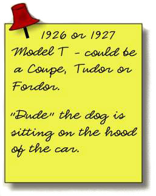 |
| 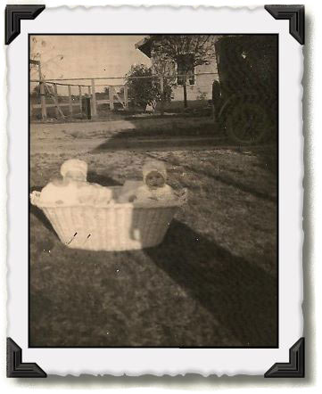 | Don Warner's dad and a neighborhood child sit in a basket in their yard next to their Model T. Don said the top would fold down, but it is in the up position in this photo. The car belonged to Don's father's family and it is the car his father told him about while he was growing up. Don's grandfather sold it later for a Model 18 with an L-head V8 just before his dad joined the Navy during WW II. 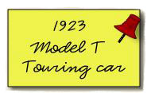 |
| 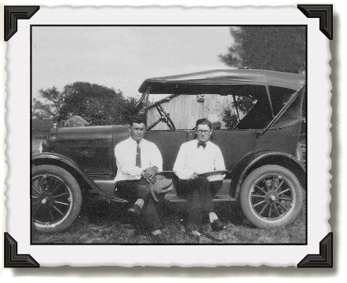 | Left to right: Ernie's grandfather's youngest brother, Joe Wentrcek, and brother-in-law, Jacob Valek, sit on the running board of their touring car. |
| 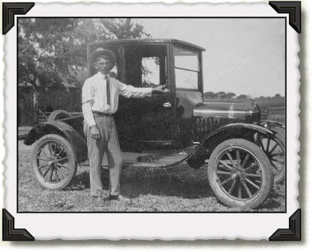 | Ernie's grandfather, Frank Wentrcek, stands alongside his Model T in Shiner, Texas. Notice the location of the handle on the door. It is located on the right side of the door instead of the left side. Ben said these were called suicide doors, for obvious reasons. If the door came open, someone could easily spill out of the car and onto the ground. |
| 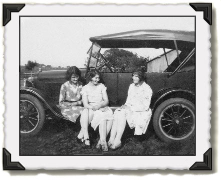 |
Ernie's grandmother, Vlasta Wentrcek, sits to the far right on the running board with the Blazek sisters, her cousins. You can identify the year of the car by the large drum rear brakes with wood spoked wheels. 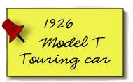 |
| 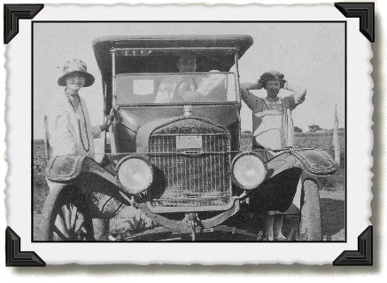 |
Ella Blazek, far left, cousin to Ernie's grandmother, is a real flapper girl. She and her two friends look like they are ready to go out on the town and have a good time. Notice the cable that is pulling the two front fenders together. 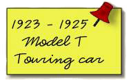 |
| 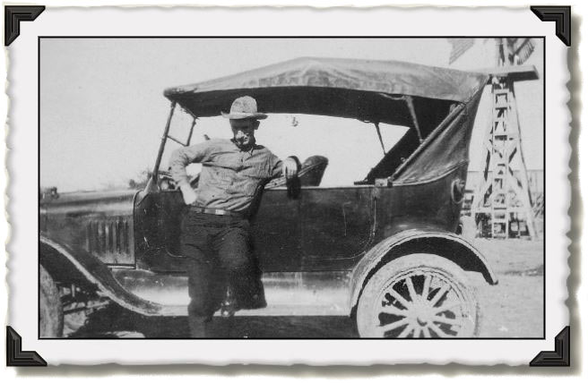 | Adolph Blazek, brother to Ernie's great-grandmother, stands next to his car. Looking at the spokes of the back tire, the car probably went down some pretty muddy roads before arriving at its destination. What a great windmill in the background. |
Texas Touring Ts
 E-mail:admin@TexasTouringTs.com
E-mail:admin@TexasTouringTs.com